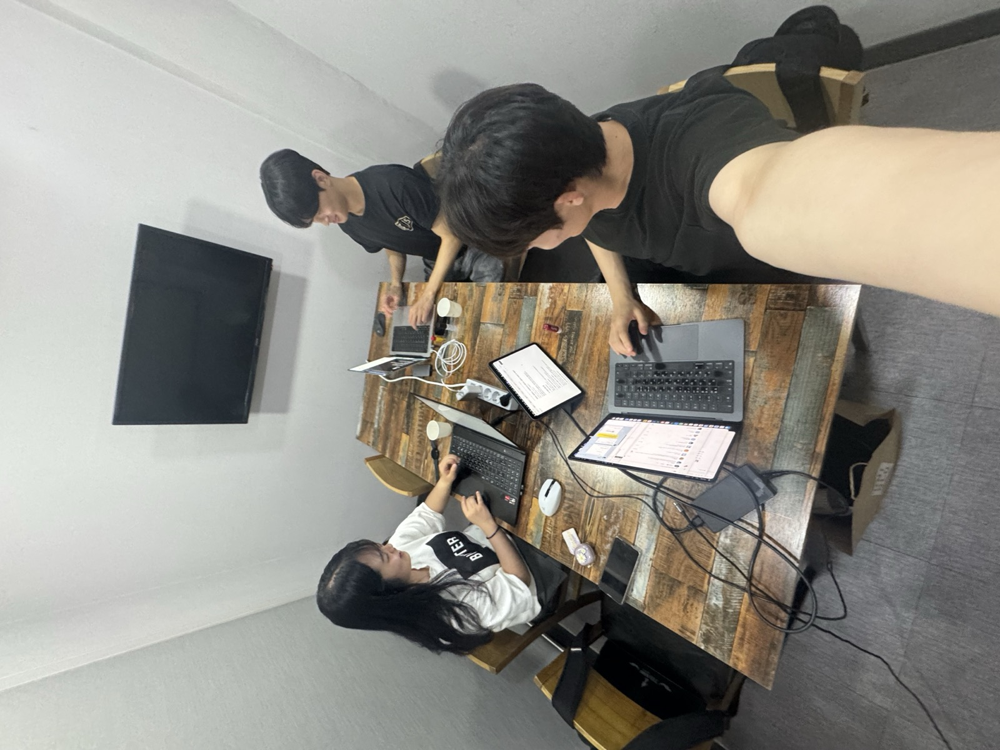

ASM 17기 · 팀 SMP 500
코드 퀄리티·아키텍처·기술 스택, 다 중요합니다. 그러나 우리의 목표는 단 하나.
실제 사용자가 겪는 진짜 문제를 찾아, 직접 쓰고 떠나지 않는 제품을 만드는 것.
가까이서 함께하고
비대면보다는 대면으로 소통하는
아날로그의 대명사.

Team SMP 500 · Offline
소마 6개월 동안 증명하고 싶은 건 멋진 데모가 아니라 살아 움직이는 유저입니다.
기술도, 아키텍처도 그다음입니다. "저희가 만들고 싶은 것"이 아니라 "사용자가 정말 필요로 하는 것"에서 출발합니다.
잘된 숫자도 부끄러운 숫자도 있는 그대로 보여드립니다. 포장된 보고서보다 진짜 현황을 함께 보는 것이 더 빠른 성장의 길이라 믿습니다.
화면 너머의 메시지보다 얼굴을 마주한 대화의 힘을 믿는 팀입니다. 비대면이 편한 시대일수록, 자주 만나 깊이 소통하는 아날로그의 가치를 지킵니다.
한 아이디어에 매몰되지 않습니다. "맞았다"를 증명하기보다 "틀렸다"를 빨리 아는 것을 더 중요하게 생각합니다.
프론트엔드 1명, 백엔드 2명(AI 겸업 1명). 역할은 명확하되, 문제 앞에서는 경계 없이 움직이는 3인 개발팀.
"유저의 입장에서
사용성이 좋은 프론트엔드를 개발하겠습니다."
"맡은 기능은 끝까지 책임지고,
탄탄한 서버로 서비스의 뼈대를 지탱하겠습니다."
"문제 해결에 필요하다면
어떤 기술이든 빠르게 녹여내겠습니다."
한 가지에 매몰되지 않습니다. 페인이 명확한 영역과 입소문이 잘 도는 가벼운 영역을 함께 검토하면서, 결국엔 "유저가 붙을 수 있는가"를 기준으로 판단합니다.
1인 세무사·감정평가사의 페인포인트 — 상속세 신고 시 10년치 거래내역 OCR, 정부 공적자료 일괄 조회 등 — 를 푸는 AI 플랫폼 아이디어. 1인 전문직 시장이 커지는 흐름 속에서 페인은 명확합니다.
기술적으로 충분히 도전해볼 만한 영역이지만, 타겟 시장 크기와 민감 정보 신뢰 확보 측면에서 보완이 필요해 현재 일부 보류 상태입니다. 시장성·보안 모델을 더 명확히 한 뒤에 다시 들여다볼 수 있다고 봅니다.
20~30대를 정조준하는 가벼운 B2C 카테고리. 페인포인트 해결보다는 마케팅과 콘텐츠 자체가 가치의 중심이 되는 비타민형 제품. 빠른 출시와 강한 메시지로 단기간에 입소문을 만드는 접근.
한 번 잡으면 사용자 확보 비용이 매우 낮은 영역이지만, 수익화와 리텐션 설계가 본질적 과제입니다. 감성·관계·일상 중 어디에서 시작할지는 아직 열어두고 있습니다.
어느 방향이든 — "만들 수 있다"가 아니라 "유저가 붙을 수 있다"를 기준으로 빠르게 시장에서 답을 받아보는 것을 우선합니다. 새로운 도메인 제안에도 열려 있습니다.
기술 답변보다 의사결정의 시야를 주실 분, "왜?"를 끝까지 물어주실 분과 함께하고 싶습니다.
지금까지 아이디어와 개발에만 시야가 좁아져 있었습니다. 개발을 넘어 기획·마케팅·데이터 분석까지, 전반의 방향성을 함께 봐주실 분.
"왜 이 유저가 이걸 쓸까요?" · "왜 이 기능을 먼저 만들었나요?" · "왜 이 기술을?" 결정의 이유를 계속 되묻는 멘토님과 함께라면, 우리가 만드는 모든 것에 분명한 근거가 생깁니다.
아직 주니어의 시야에 머물러 있습니다. 현업에서 어떻게 우선순위를 정하고, 의사결정하며, 협업하는지 — 기술 자체보다 "이렇게 생각하고 일하는구나"를 배우는 것이 가장 큰 자산이라 믿습니다.
좋은 제품을 만드는 과정에서 쌓인 경험이 자연스럽게 우리의 언어가 되고, 그 경험이 채용 시장에서 우리만의 이야기가 되도록 — 제품과 커리어, 두 축을 함께 그려주실 분.
"잘하고 있다"보다 "왜 이렇게 했냐"는 질문이 더 필요한 단계입니다. 지적에 방어부터 하지 않고, 의도를 먼저 이해하고 팀 내에서 다시 논의해 의사결정에 반영합니다. 피드백이 아프다면, 그건 예방 접종입니다.
유저 수·매출·실패한 실험·팀 내부 의견 충돌까지 가공 없이 공유합니다. 부끄러운 숫자일수록 먼저 꺼냅니다. 반영이 어려운 피드백이라면 트레이드오프를 솔직히 말씀드려 멘토링이 양방향이 되도록 합니다.
매일의 진행 상황·막힌 부분·결정 사항을 기록해 항상 열어두겠습니다. 멘토링 시간에만 포장된 보고서를 보여드리는 게 아니라, 팀이 매일 어떻게 움직이는지를 가공 없이 확인하실 수 있도록 합니다.
특정 기술을 미리 정해두고 끼워 맞추지 않습니다. 문제에 가장 적합한 스택을 그때그때 채택합니다.